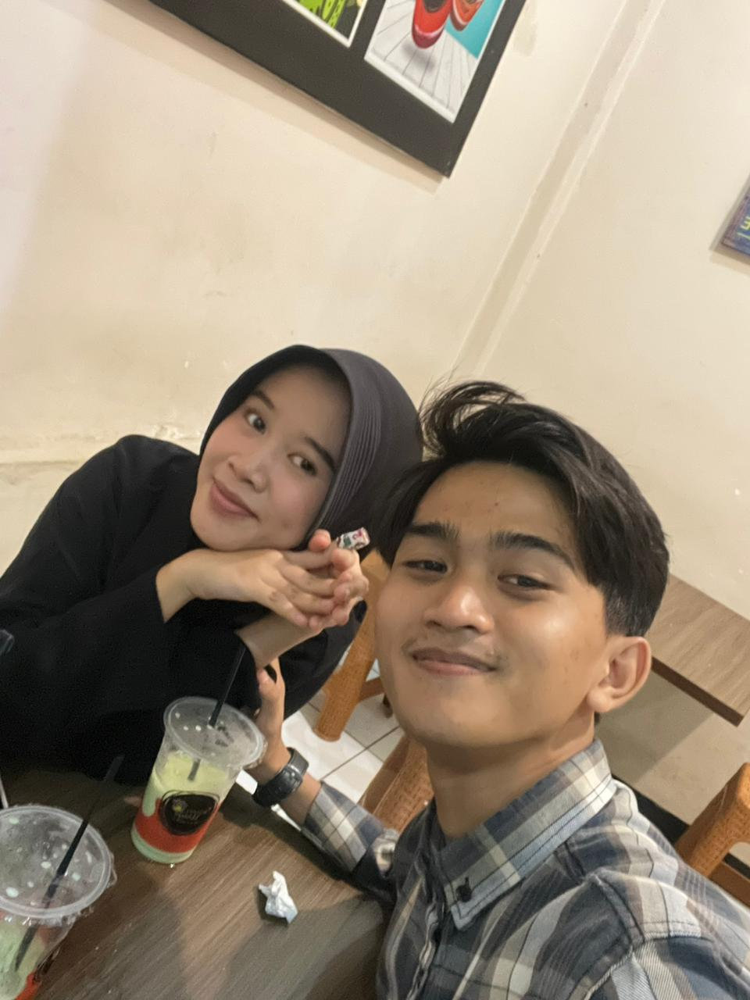

11 Mei 2004 — 11 Mei 2026
Dua puluh dua tahun bukan sekadar angka,
melainkan tumpukan dialog yang membangun kedewasaan.

"Satu wajah, sejuta cerita,
dan ribuan diskusi yang telah kita lalui."
Dulu, diskusi kita mungkin hanya tentang warna kesukaan atau mimpi-mimpi kecil. Seiring waktu, diskusi itu berubah menjadi debat tentang realita, pertukaran pikiran tentang masa depan, hingga hening yang paling dipahami. Makin dewasa kita, makin kita sadar bahwa kedewasaan tidak lahir dari kesepakatan terus-menerus, tapi dari diskusi-diskusi berat yang berhasil kita selesaikan bersama.
Seorang jiwa lahir ke dunia — belum tahu betapa banyak percakapan yang menantinya.
Since 2023 — diskusi berubah bentuk. Lebih dalam, lebih jujur, lebih bermakna dari sebelumnya.
Ready for more discussions. Dua puluh dua tahun — dan masih banyak kata yang belum terucap.